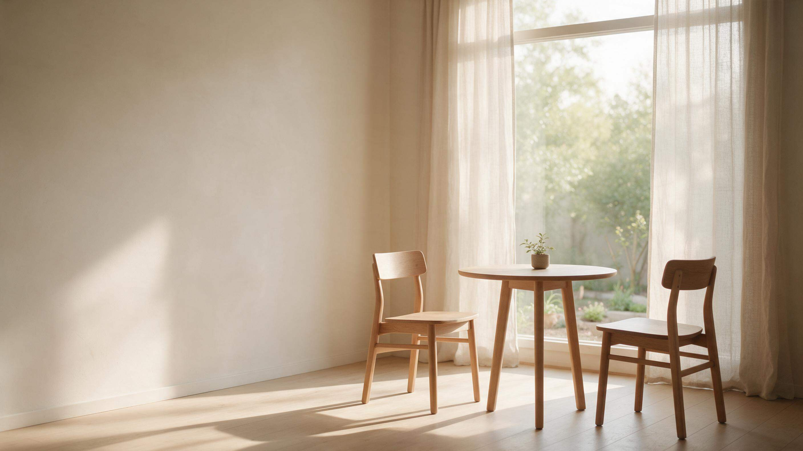
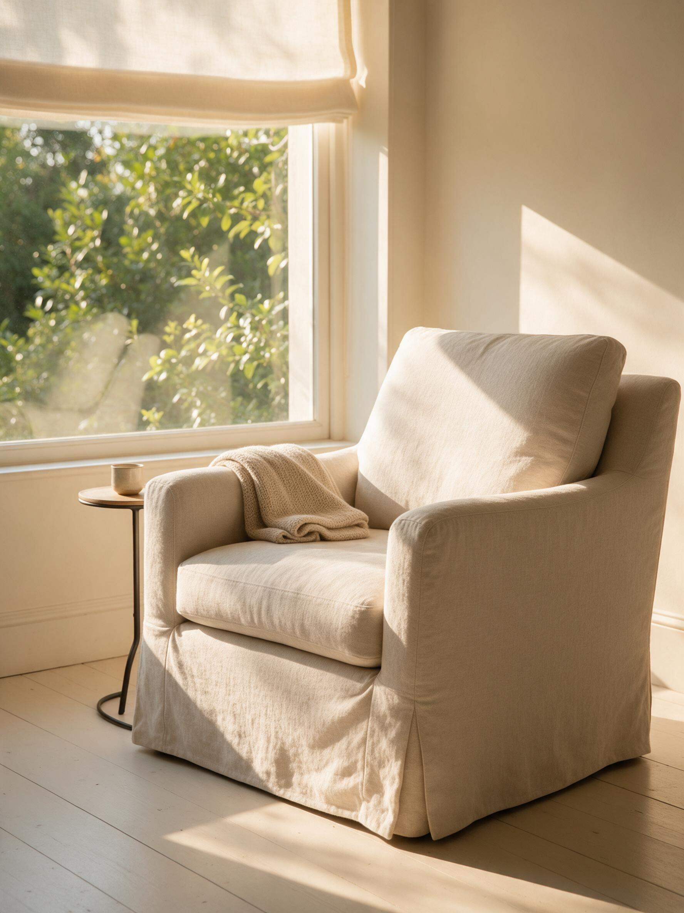
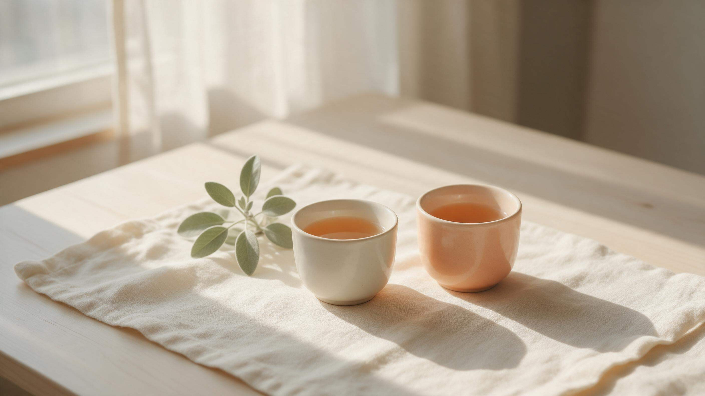

AnissaNature 采安療心室
花精陪伴公益計畫
有些時候，我們不需要立刻找到答案，
只是需要一個地方，好好說說最近的生活。
這個花精療癒陪伴公益計畫，希望為正在人生低谷、重大轉變或困難時刻的人，提供一段免費的線上花精陪伴。
每月開放有限名額｜採申請制
Why
為什麼，我想做這件事？
人生裡，有些時候，我們會突然走進一段自己沒有預料過的低谷。
可能是一場疾病，一段關係的結束，工作的變化，家庭的變故，或是一個原本熟悉的人生，突然不知道該怎麼走下去。
曾經，我也走過這樣的路。突如其來的一場大病，醫生宣告的時候，我感覺好像被雷劈到。當時人在異國他鄉，手中還有一個襁褓中的孩子，當下真的無法思考，不知道下一步在哪。
那段經歷讓我重新思考：如果人生真的會有一些我們無法控制的風雨，那麼，在一個人最需要的時候，如果身邊能有一個人，願意安靜地陪他坐一會兒，不急著告訴他答案，是不是就已經是一種力量？
後來我慢慢明白，陪伴不一定是替一個人解決問題。
有時候，只是在他還看不見出口的時候，替他留一盞燈。
感謝一切陪伴我走過低谷的人與力量。
現在我也想把自己一路走來所學習的，以及巴赫花精所帶給我的支持，分享給那些此刻正需要的人。
About
關於 Anissa
我是 Anissa，采安療心室的創辦人。
我曾經從事健康媒體與行銷工作，後來走上創業之路，也一路學習芳療、香氛與巴哈花精等各種情緒療癒之道。
現在，我將這些學習重新整理成一種我真正相信的陪伴方式：不是替一個人找到答案，而是陪他慢慢聽見自己的答案。
專業訓練與資格
- 專業資格BFRP英國巴哈中心註冊花精應用師The Bach Centre Registered Practitioner
- 專業資格NAHA Level 1美國整體芳療協會 初階芳療師National Association for Holistic Aromatherapists
- 專業資格FFAMDFFAMD 法國芳香療法與自然醫學聯合會 初階醫芳師Fédération Française d’Aromathérapie et Médecines Douces
- 專業資格KDCA韓國設計工藝協會 調香師Korea Design Craft Association
Who
也許，你正需要一個地方停下。
你不需要先知道自己出了什麼問題。
只要你願意停下來，看看現在的自己。
- 正經歷人生／生涯轉變
- 忽然遭遇重大人生事件或變故
- 工作或生活出現重大變化
- 關係結束或家庭正在經歷變動
- 親職過程中感到疲憊、迷惘
- 長期把別人需要放在自己之前
- 想改變，卻不知道從哪裡開始
- 感覺自己卡在某個狀態裡很久
- 想重新理解自己的情緒與需要
- 想要成爲版本2.0 更好的自己
你不需要有一個足夠嚴重的理由，才值得被陪伴。
想知道，一段花精陪伴可能是什麼樣子？
讀一個真實的花精個案故事 ↗
Bach Flowers
什麼是巴哈花精？
巴哈花精（Bach Flower Remedies）是由英國醫師 Edward Bach 發展的一套花精系統，著重於人的情緒狀態與內在感受，在歐洲已有百年的歷史。
巴哈花精共有 38 種花精，各自對應不同的情緒狀態與生命經驗。
花精的選擇不是依照固定的人格類型，也不是「某種症狀就一定對應某一種花精」。
每一次諮詢，我們會從你當下的狀態出發，因此即使是同一個人，在不同的人生階段，也可能有不同的選擇。
所以，每一次花精諮詢，都可以是一段重新認識自己的旅程。
How
這段陪伴，會怎麼進行？
- 01
線上初步了解
了解你目前正在經歷的生活與內在狀態。
- 02
整理與覺察
透過對話，慢慢看見此刻真正困擾你的事情。
- 03
花精選擇
依照巴赫花精系統與當下狀態，一起整理適合的花精。
- 04
帶著一份支持回到生活
提供個人花精配方，以及後續使用與自我覺察提醒。

我相信，每個人其實都比自己想像的，更知道自己需要什麼。
花精，是一份溫柔的支持。
我，想陪你更靠近自己。
因為真正的力量，最終還是要從你自己身上長出來。
這段陪伴的核心
Program
關於公益方案
- 全程線上
- 每月開放固定名額
- 採申請制
- 填寫申請表不代表一定取得名額
- 會依目前名額與申請內容進行安排
- 每位申請者最多申請一次公益陪伴為限
- 若之後有持續陪伴需求，可再依一般服務方式預約
名額內的陪伴不收取諮詢費用，這是一份以公益為初衷的陪伴。
如果你有興趣想認識巴哈花精，也歡迎從一次完整的花精體驗開始。
了解首次體驗方案（NT$1,200）↗Apply
如果你覺得，現在的自己需要一點陪伴
也許不用急著找到答案。先讓自己停下來。
申請公益陪伴每月開放有限名額｜採申請制．將於新視窗開啟申請表
- 花精諮詢是一種自我探索與陪伴服務，並非醫療、心理治療或危機處理服務。
- 如果你目前正處於急性心理危機、有人身安全疑慮，或有需要立即處理的醫療問題，請優先尋求適當的醫療或心理專業協助。